ما المقصود بممتلكات المدرسة؟
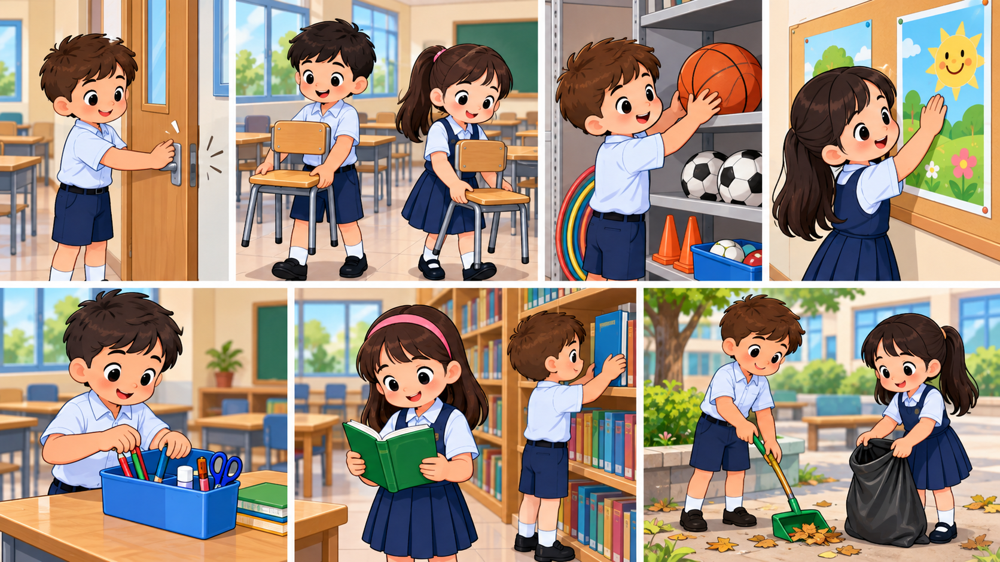
ممتلكات المدرسة هي كل ما نستخدمه داخل الصف والساحة والممرات، مثل المقاعد والكتب والسبورة والحديقة والأدوات العامة.
سؤال للنقاش: ما الأشياء التي نعدّها من ممتلكات المدرسة؟

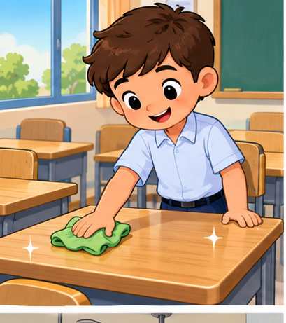
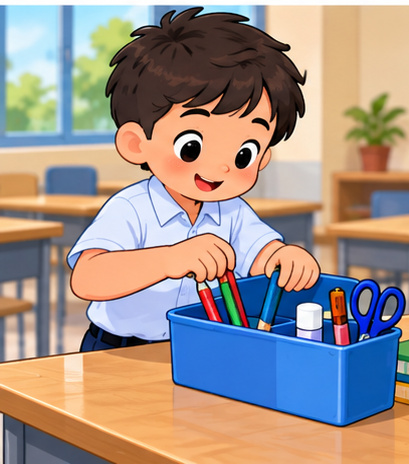
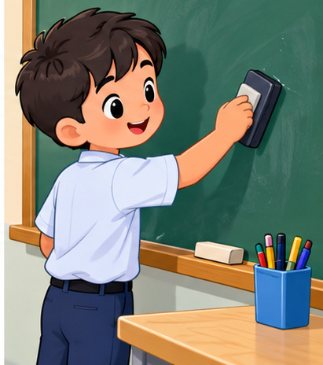
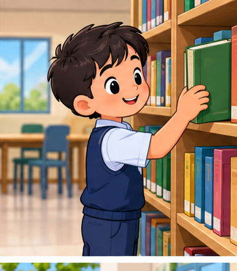
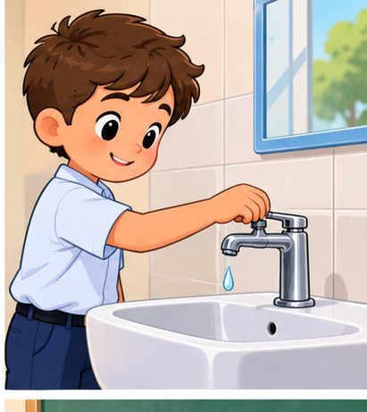
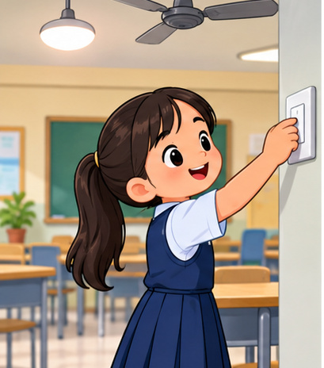
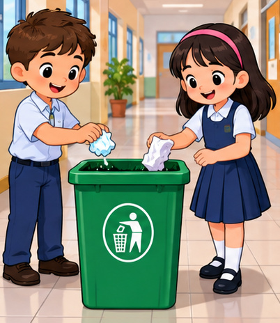
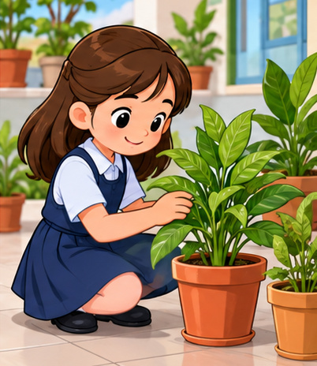
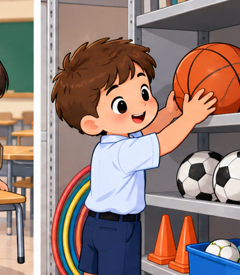
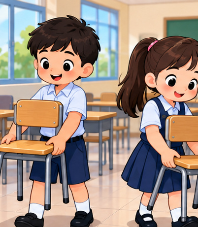
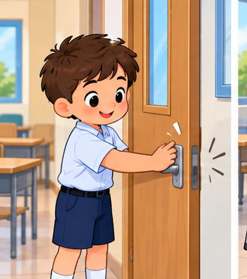
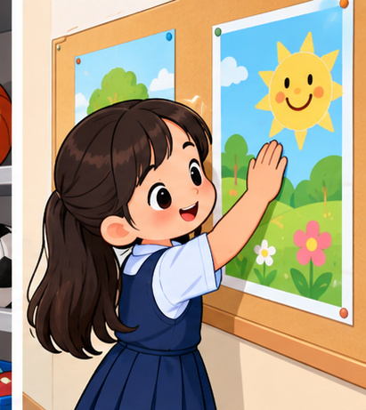
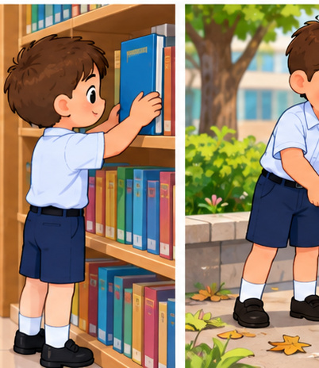
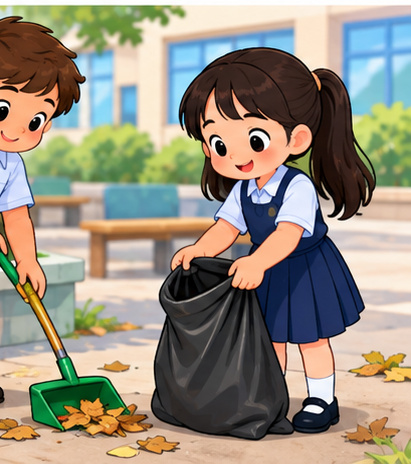